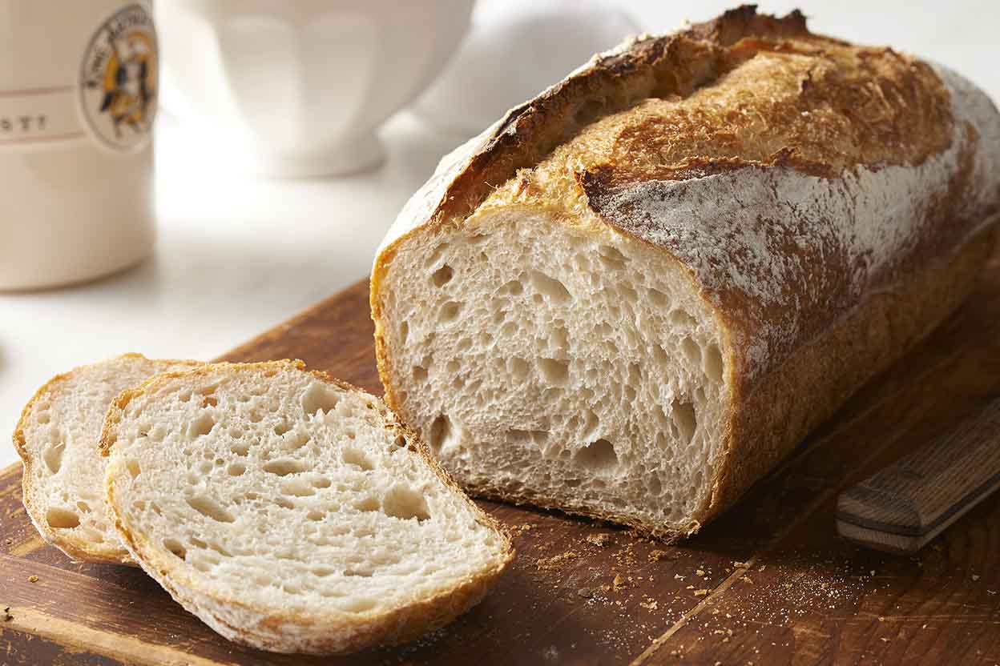

What is Sourdough?
Sourdough is a dough containing a Lactobacillus culture in symbiotic combination with yeasts. It is one of the principal means of biological leavening in bread baking, the others using cultivated forms of yeast.
Sourdough bread is made by the fermentation of dough using naturally occurring lactobacilli and yeast. Sourdough bread has a more sour taste and better inherent keeping qualities than breads made with baker's yeast, due to the lactic acid produced by the lactobacilli.
Sourdough is a stable culture of lactic acid bacteria and yeast in a mixture of flour and water. Broadly speaking, the yeast produces gas (carbon dioxide) which leavens the dough, and the lactic acid bacteria produce lactic acid, which contributes flavor in the form of sourness. The lactic acid bacteria metabolize sugars that the yeast cannot, while the yeast metabolizes the byproducts of lactic acid fermentation.